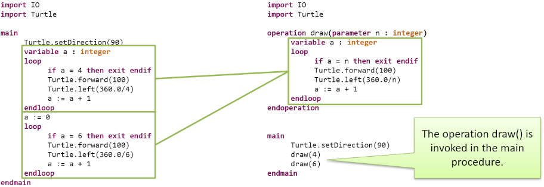

Up until now we have been writing our algorithms only inside the main procedure.
In a sense, we were programming in a purely imperative way.
So it is about time we should move proper into the topic of procedural programming and introduce user defined operations.
In fact, we were using operations since the very beginning of this course.
When we invoked IO.writeString("Hello, world!"), we have called a predefined operation from a standard library.
We have relied on these operations to perform specific functionality again and again and again.
As a small reminder, here are just a couple of these operations:
Some of these operations just do something, like IO.writeString("Hello, world!") or Turtle.forward(100).
We cannot write these operations inside of an expression, e.g. IO.writeString("Hello, world!") & "yay!" is not a vlid expression.
Such operations, which do not yield a value, are called procedures.
Operation which return a value, e.g. IO.readInteger() or Lists.append(lst, elem) are called functions.
Usually, we invoke function inside of an expression, such as IO.readInteger() + 1.
Now that we see the value of reusable operations, let us take a look at a familiar scenario.
We want to draw a square and a hexagon using Turtle.
As we can see, we have a lot of common code, which is somewhat redundant.
The only difference between the two loops is how often they are executed and how the angle is calculated.
So let us define an operation, which would draw us a polygon which we could reuse as much as we want.
We transfer the code that is common into the body of the operation.

The parts that are actually different are parameterized.
We specify that our operation accepts a parameter, which is then used inside of the operation.
The value of the parameter is set when invoking the operation.
Operations may have an arbitrary number of parameters.
Operations may have an arbitrary number of parameters.
Let us add an additional parameter which will specify the length of our edges.
As mentioned, unlike procedures, functions return a value.
Let us implement a simple linear function then:
Procedures can be terminated with an empty return statement.
Functions must have at least one return statement.
The returned value must have the same type as the return type of the function.